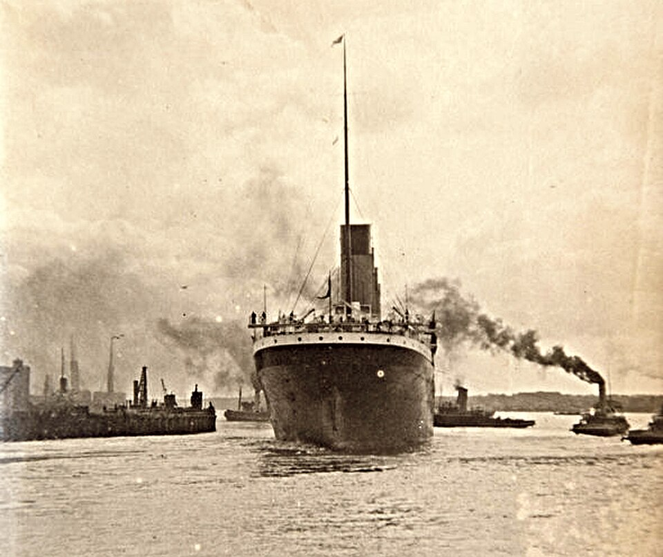

Safety Changes
The Titanic disaster revealed serious problems in maritime safety. One of the most important issues was the number of lifeboats. Titanic did not carry enough lifeboat space for everyone on board. At the time, safety regulations were based partly on the size and type of ship rather than the total number of passengers and crew.
After the disaster, governments and shipping companies introduced stronger safety rules. Ships were required to carry enough lifeboats for everyone on board, and emergency drills became more important. Radio communication also became a major part of maritime safety, because Titanic had received iceberg warnings before the collision.
The disaster also contributed to the creation of international agreements that improved safety at sea. These changes helped shape modern rules for passenger ships and emergency procedures.
Why were lifeboats such an important issue?
Titanic had lifeboats, but there was not enough space for every passenger and crew member. This became one of the strongest examples of why safety regulations needed to change.

Titanic in Popular Culture
The story of Titanic has appeared in books, films, television programs, documentaries, and stage productions. Its combination of technology, tragedy, human stories, and mystery has made it a powerful subject for storytellers.
One of the most famous examples is the 1997 film "Titanic," directed by James Cameron. The film introduced the story of the ship to a new generation and became one of the most successful movies in cinema history.
Many documentaries and historical programs have also explored the wreck, the passengers, and the causes of the disaster. Modern underwater technology has allowed researchers to produce detailed images and scans of the wreck, giving the public a better understanding of what remains.
Memorials and Museums
Titanic is remembered in museums and memorials in several countries. Belfast, where the ship was built, has become one of the most important places connected to Titanic history. Visitors can learn about the ship's construction, the people who worked on it, and the events of the voyage.
Memorials also honor passengers, crew members, engineers, musicians, and other people who died in the disaster. These places help keep their stories alive and remind visitors that Titanic was not only a famous ship, but also a human tragedy.
Today, researchers, historians, museums, and families continue to preserve documents, photographs, personal stories, and physical artifacts. Together, these materials help future generations understand why Titanic remains an important part of history.


Why is Belfast important to Titanic history?
Titanic was built in Belfast by Harland and Wolff, making the city one of the most important places connected to the ship's history.
Why do museums preserve Titanic objects?
Museums preserve artifacts, photographs, and documents so that visitors can learn from real evidence connected to the ship and the people who traveled on it.